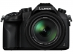

器材库 > 不可换镜头数码相机 > DMC-FZ1000

规格总览
发布日期
2014-06-12
影像规格
影像传感器
MOS
影像传感器尺寸
1.0英寸
总像素
2090万
有效像素
2010万
静态图像尺寸
[4:3] 4864×3648 / 3456×2592 / 2432×1824[3:2] 5472×3648 / 3888×2592 / 2736×1824[16:9] 5472×3080 / 3840×2160 / 1920×1080[1:1] 3648×3648 / 2592×2592 / 1824×1824
静态图像格式
JPEG, RAW
短片尺寸
[AVCHD Progressive] FHD 60p:1920×1080[AVCHD] FHD 24p/30p/60i:1920×1080[MP4] 4K 30p:3840×2160, FHD 60p/30p:1920×1080, HD 30p:1280×720, VGA 30p:640×480
短片格式
AVCHD, MP4
防抖系统
静止图像：POWER O.I.S. 动态图像：5轴混合防抖
镜头和对焦
镜头结构
15片/11组
非球面镜片
5片
低/超低色散镜片
4片
焦距
9.1mm-146mm
等效35mm画幅焦距
25mm-400mm
最大光圈
f/2.8-4.0
光学变焦
16倍
曝光控制
测光模式
中央重点测光, 多分区评价测光, 点测光
曝光模式
P（程序自动曝光）, A（光圈优先自动曝光）, S（快门速度优先自动曝光）, M（手动测光曝光）
快门速度
60~1/16000秒，B门
曝光补偿
±5EV以1/3EV级调整
ISO感光度
80, 100, 200, 400, 800, 1600, 3200, 6400, 12800, 自动, 125, 25600
白平衡
多云, 白炽灯, 闪光灯, 色温调节, 阴影, 自动, 预设白平衡, 晴天
连拍
约 12 fps
闪光灯
内置闪光灯
弹出式
取景规格
取景器
电子取景器
取景器尺寸
0.39英寸
取景器像素
236万
LCD类型
TFT LCD
LCD尺寸
3.0英寸
LCD像素
92万
视野率
100%
LCD特性
翻转屏
文件输入/输出
存储卡
SD/SDHC, SDXC
数据接口
USB2.0
视频/音频接口
AV 输出, Micro HDMI 接口
无线功能
Wi-Fi, NFC
电源
电池
锂离子电池（7.2V/1200mAh）
续航能力
可拍摄照片约360张
外观
颜色
黑色
尺寸
136.8×98.5×130.7mm
重量
仅机身约780g / 含电池与存储卡约831g
其它
附件
锂电池，充电器，遮光罩，镜头盖，热靴盖，USB连接电缆，肩带，DVD
软件
PHOTOfunSTUDIO 9.5 PE，SILKYPIX® Developer Studio 4.1 SE，Adobe Reader，LoiLoScope - 体验版
该产品暂无存档的网友点评
产品图 / 样片
DMC-FZ1000